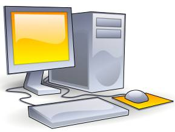

STAM 102 C :: Lecture 03 :: Personal Computers, Types of Processors, Booting of Computer- warm and cold booting

Personal Computer
A personal computer (PC) is any general-purpose computer whose size, capabilities, and original sales price make it useful for individuals, and which is intended to be operated directly by an end user, with no intervening computer operator.

This is in contrast to the batch processing or time-sharing models which allowed large expensive mainframe systems to be used by many people, usually at the same time, or large data processing systems which required a full-time staff to operate efficiently.
A personal computer may be a desktop computer, a laptop, tablet PC or a handheld PC (also called palmtop). Software applications for personal computers include word processing, spreadsheets, databases, Web browsers and e-mail clients, games, and myriad personal productivity and special-purpose software. Modern personal computers often have high-speed or dial-up connections to the Internet, allowing access to the World Wide Web and a wide range of other resources.
A PC may be used at home, or may be found in an office. Personal computers can be connected to a local area network (LAN) either by a cable or wirelessly.
While early PC owners usually had to write their own programs to do anything useful with the machines, today's users have access to a wide range of commercial and non-commercial software which is provided in ready-to-run form. Since the 1980s, Microsoft and Intel have dominated much of the personal computer market with the Wintel platform.
The capabilities of the personal computer have changed greatly since the introduction of electronic computers. By the early 1970s, people in academic or research institutions had the opportunity for single-person use of a computer system in interactive mode for extended durations, although these systems would still have been too expensive to be owned by a single person. The introduction of the microprocessor, a single chip with all the circuitry that formerly occupied large cabinets, led to the proliferation of personal computers after 1975.
Types of Processors
The Central Processing Unit (CPU) or the processor is the portion of a computer system that carries out the instructions of a computer program, and is the primary element carrying out the computer's functions.
AMD processors include AMD Athlon, AMD Athlon 64, AMD Athlon X2, AMD Athlon Xp, AMD Duron, AMD Sempron, AMD Turion, MD Opteron and AMD Phenom 1.
Moreover, there are various processors offered by various companies like Macintosh processor. In other words different processors are used for different types of technology.
Booting of Computer – Warm and Cold Booting
Booting of computer is the process of powering it on and starting the operating system. Booting loads the first piece of software that starts a computer. Because the operating system is essential for running all other programs, it is usually the first piece of software loaded during the boot process.
Cold boot is the process of starting a computer from a powered-down, or off state. Cold boot is also called as hard boot.
Warm boot refers to restarting a computer that is already turned on via the operating system. Restarting it returns the computer to its initial state. A warm boot is sometimes necessary when a program encounters an error from which it cannot recover. On PCs, you can perform a warm boot by pressing the Control, Alt, and Delete keys simultaneously. On Macs, you can perform a warm boot by pressing the Restart button.
| Download this lecture as PDF here |